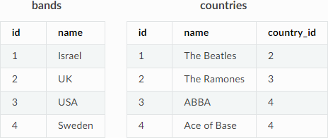

UPDATE
The UPDATE statement page describes the following:
Overview
The UPDATE statement is used to modify the value of certain columns in existing rows without creating a table.
It can be used to do the following:
Performing localized changes in existing data, such as correcting mistakes discovered after ingesting data.
Setting columns based on the values of others.
Warning
Using the UPDATE command on column clustered using a cluster key can undo your clustering.
The UPDATE statement cannot be used to reference other tables in the WHERE or SET clauses.
Syntax
The following is the correct syntax for the UPDATE command:
UPDATE target_table_name [[AS] alias1]
SET column_name = expression [,...]
[FROM additional_table_name [[AS] alias2][,...]]
[WHERE condition]
The following is the correct syntax for triggering a clean-up:
SELECT cleanup_chunks('schema_name','table_name');
SELECT cleanup_extents('schema_name','table_name');
Parameters
The following table describes the UPDATE parameters:
Parameter |
Description |
|---|---|
|
Specifies the table containing the data to be updated. |
|
Specifies the column containing the data to be updated. |
|
Additional tables used in the WHERE condition for performing complex joins. |
|
Specifies the condition for updating the data. |
Note
Similar to a DELETE statement, an UPDATE statement may leave some uncleaned data behind, which requires a cleanup operation.
Examples
The Examples section includes the following examples:
Updating an Entire Table
The Examples section shows how to modify the value of certain columns in existing rows without creating a table. The examples are based on the following tables:
The following methods for updating an entire table generate the same output, and result with the bands record set to NULL:
UPDATE bands SET records_sold = 0;
UPDATE bands SET records_sold = 0 WHERE true;
UPDATE bands SET records_sold = 0 USING countries;
UPDATE bands SET records_sold = 0 USING countries WHERE 1=1;
Performing Simple Updates
The following is an example of performing a simple update:
UPDATE bands SET records_sold = records_sold + 1 WHERE name LIKE 'The %';
Updating Tables that Contain Multi-Table Conditions
The following shows an example of updating tables that contain multi-table conditions:
UPDATE bands
SET records_sold = records_sold + 1
WHERE EXISTS (
SELECT 1 FROM countries
WHERE countries.id=bands.country_id
AND country.name = 'Sweden'
);
You can also write the statement above using the FROM clause:
UPDATE bands
SET records_sold = records_sold + 1
FROM countries
WHERE countries.id=bands.country_id AND country.name = 'Sweden';
Updating Tables that Contain Multi-Table Expressions
The following shows an example of updating tables that contain multi-table expressions:
UPDATE bands
SET records_sold = records_sold +
CASE
WHEN c.name = 'Israel' THEN 2
ELSE 1
END
FROM countries c
Configuring Update Behavior
The failOnNondeterministicUpdate flag is used to configure UPDATE behavior when updating tables containing multi-table expressions. This flag is needed when you use the FROM clause along with a set expression containing columns from additional tables. Doing this can cause a match to occur between a row from the target table with multiple rows from the additional tables.
For instance, the example in the previous section sets the records sold to 2 when the country name is Israel. If you were to insert a new entry into this table with Israel spelled in Hebrew (using the same country ID), you would have two rows with identical country ID’s.
When this happens, both rows 5 and 6 in the bands table match both Israel entries. Because no algorithm exists for determining which entry to use, updating this table may either increase records_sold by 2 (for Israel in English) or 1 (for Israel in Hebrew).
You must set the failOnNondeterministicUpdate flag to FALSE to prevent an error from occuring.
Note that a similar ambiguity can occur when the Hebrew spelling is used in the following example:
UPDATE bands
SET record_count = record_count + 1
FROM countries c
WHERE c.name = 'Israel'
However, the WHERE clause above prevents a match with any entry other than the defined one. Because the target table row must match with the WHERE condition at least once to be included in the UPDATE statment, this scenario does not require configuring the failOnNondeterministicUpdate flag.
Triggering a Clean-Up
The following shows an example of triggering a clean-up:
SELECT * FROM sqream_catalog.discarded_chunks;
SELECT cleanup_discarded_chunks('public','t');
The following is an example of the output generated from the above:
database_name - _discarded_master
table_id - 24
column_id - 1
extent_ID - 0
Permissions
Executing an UPDATE statement requires the following permissions:
Both
UPDATEandSELECTpermissions on the target table.The
SELECTpermission for each additional table you reference in the statement (in ither theFROMclause orWHEREsubquery section).
Locking and Concurrency
Executing the UPDATE statement obtains an exclusive UPDATE lock on the target table, but does not lock the destination tables.